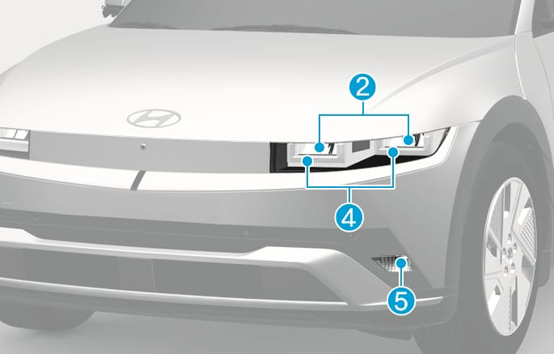
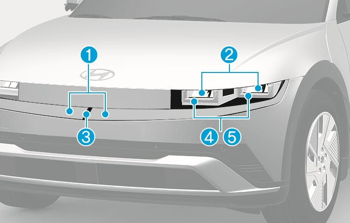

전조등, 방향지시등, 차폭등, 주간 주행등
전조등 어셈블리를 교체한 후에는 당사 직영 하이테크센터나 블루핸즈에서 전조등 조사각을 조절하십시오(전조등 에이밍).
A타입

2C_FrontLampOverView
B타입

2C_FrontLampOverView_1
- 가니시 히든 라이팅(사양 적용 시)
- 전조등(상향/하향)
- 충전 표시등(사양 적용 시)
- 차폭등/주간 주행등
- 방향지시등(A타입: 벌브, B타입: LED)
전조등, 차폭등, 주간 주행등이 켜지지 않는 경우 당사 직영 하이테크센터나 블루핸즈에서 차량을 점검하십시오.
벌브 타입 방향지시등 교체하기
-
주차 브레이크를 체결한 후 시동을 끄십시오.
-
바퀴를 안쪽 방향으로 돌리고 일자(–) 드라이버를 이용해 휠 가드에 장착되어 있는 서비스 홀 커버 클립을 분리하십시오.
-
서비스 홀 커버를 분리한 후 내부의 램프 소켓을 왼쪽으로 돌려 분리하십시오.
-
전구를 소켓 방향으로 누른 상태로 왼쪽으로 돌린 후 소켓으로부터 분리하십시오.
-
새 전구를 소켓에 넣고 누르면서 오른쪽으로 돌려 고정하십시오.
-
램프 소켓을 서비스 홀 내부 장착부에 결합한 후 오른쪽으로 끝까지 돌려 고정하십시오.
-
서비스 홀 커버를 닫고 고정 클립으로 고정하십시오.
-
장착된 전구의 온도가 내려간 후 교체하십시오.
-
전구의 유리 부분을 손으로 잡지 마십시오.
-
전구를 조심스럽게 다루고, 긁힘과 마찰에 주의하십시오.
-
전구가 켜진 상태에서 액체가 전구에 닿지 않도록 하십시오.
-
전구 교체 시 반드시 보안경을 착용하십시오.
-
방향지시등을 직접 교체하는 경우에는 차량의 부품이 파손되거나 부상 위험이있습니다. 가까운 당사 직영 하이테크센터나 블루핸즈에서 정비를 받으십시오.